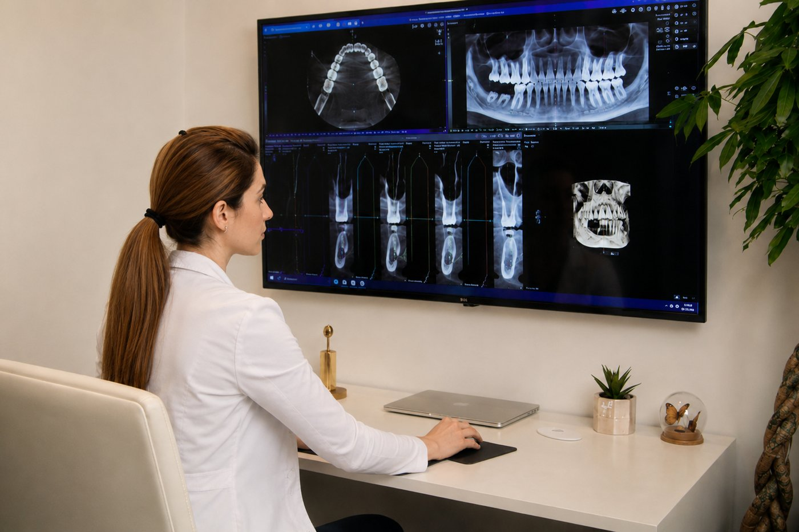

Told You Need a Root Canal? You May Still Have Options.
When a dentist says “root canal,” it can feel like the decision is already made. Often, it isn’t. If the nerve inside your tooth is still alive, there may be a way to keep your natural tooth — and the first step is simply finding out where things really stand.

How We Find Out Whether Your Tooth Can Be Saved
A deep cavity doesn’t have to mean a root canal is inevitable. Before anything is decided, Dr. Mersedeh gathers the full picture — because the right information often reveals more choices than expected.
We begin with 3D CBCT imaging, which shows the tooth and the bone around it in three dimensions. It reveals what a standard X-ray can miss: exactly how close the decay sits to the nerve, and whether the surrounding bone is healthy.
Then we test whether the nerve is still alive — a step that’s easy to skip but changes everything. When the nerve is vital, we can often clean down to the decay while leaving the nerve undisturbed, use ozone to reduce bacteria in the area, and rebuild the tooth with biocompatible, metal-free materials in the same visit. In many cases, the nerve goes on to heal on its own.
Have your tooth evaluated
The Window to Save a Nerve Is Real — and It Has Limits
A living nerve can often be preserved. But once bacteria cause irreversible damage and the nerve is dying or dead, the remaining choices narrow to a root canal or removing the tooth. Catching things earlier genuinely changes what’s possible.
Many people are surprised to learn their tooth had been struggling long before any pain began. Deep decay can advance quietly, so by the time a tooth hurts, the options may be more limited than they were months earlier.
An evaluation now — while the nerve may still be alive — gives you the best chance of keeping it that way. Even if you’ve already been told you need a root canal, it’s worth confirming whether that’s still the case with the right imaging and testing.

A Whole-Body Approach to Keeping Your Natural Teeth
Biological dentistry looks at the whole picture, not just the problem in front of it. That means choosing technology, materials, and techniques that work with your body’s natural ability to heal — never against it.
Our approach draws on 3D imaging for an accurate diagnosis, ozone to address bacteria without harsh chemicals, and biocompatible restorative materials chosen with the living tooth in mind. Every step is considered.
Dr. Mersedeh has helped patients who arrived certain a root canal was their only option — many of whom still have their natural tooth today. We can’t promise the same outcome for everyone, but we can promise a thorough, honest evaluation before any decision is made.
Schedule your evaluation